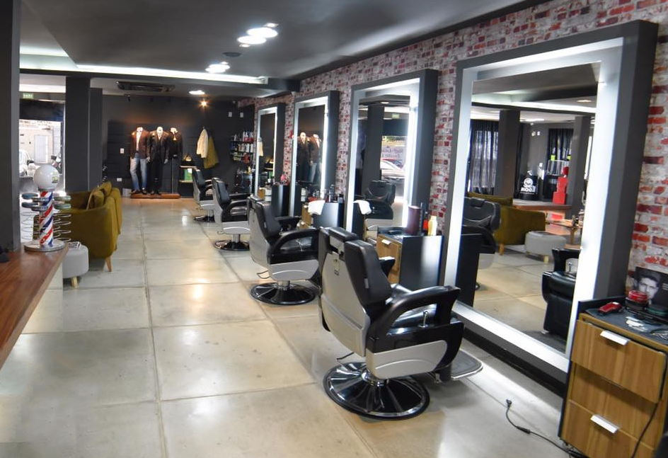

Segundo achados arqueológicos, o ser humano já tinha o hábito de cuidar dos cabelos no período pré-histórico, quando confeccionavam navalhas e pentes em pedra. Contudo, foi no Egito, aproximadamente 5.000 a.c, que a arte de cuidar dos cabelos chegou ao auge. A habilidade dos cabeleireiros no uso de escova, tesouras e navalhas com loções de tratamento eram prestigiados pelos faraós. Conversas sobre política, esportes, eventos sociais e é claro mulher, eram assuntos de filósofos, escritores, poetas e políticos, enquanto faziam ondas nos cabelos e eram barbeados. Entre os costumes da época, a moda egípcia exigia que homens e mulheres usassem perucas de cabelo humano ou de lã de carneiro. As barbas postiças eram populares entre os homens e a tintura azul-escuro era usada para conseguir a cor preta (predileta) tanto para barbas, quanto para perucas. Na Roma Antiga, as barbearias também tiveram seu papel e continuaram sendo instituições sociais, tendo um grande número de barbeiros que prestavam seus serviços nos mercados e casas de banho públicas. Os cidadãos prósperos ofereciam aos seus convidados os serviços dos seus barbeiros particulares. Ainda no século 18, barbearias tradicionais ganharam um dos objetos que mais a identificaria ao longo da história: a cadeira, além de uma bacia de água e claro, a navalha. E assim iniciou a história da arte da barbearia, que sobrevive até hoje, aliando tradição e tecnologia.
Atualmente, o barbeiro precisa ser dotado de habilidades empresariais para que seu negócio possa sobreviver ao ambiente competitivo existente nessa categoria. Vemos inclusive um aumento substancial nos cursos oferecidos a eles, com foco em administração financeira, gestão de pessoas e contabilidade. Outro ponto interessante com relação aos barbeiros de hoje é o fato de muitos deles serem jovens, justamente devido à propagação de cursos para barbeiros e ao acesso facilitado aos mesmos. Tal realidade gerou no ambiente das barbearias uma mudança drástica. Antigamente, uma barbearia tinha um foco no público de meia-idade, que costumava ir ao barbeiro com seu filho ou filha para cortar o cabelo. Hoje, embora este modelo ainda exista, temos uma ascensão de barbearias focadas no público jovem, incluindo os barbeiros, com um ambiente mais descontraído, sem perder, contudo, a cultura da conversa nas barbearias, que já existe há séculos.[2] As barbearias brasileiras estão se adaptando a cultura norte-americana, com locais tradicionais, visto isso já encontramos os famosos Barber Poles[3], os sinalizadores de barbearias americanas nas portas dos estabelecimentos brasileiros.[4]
